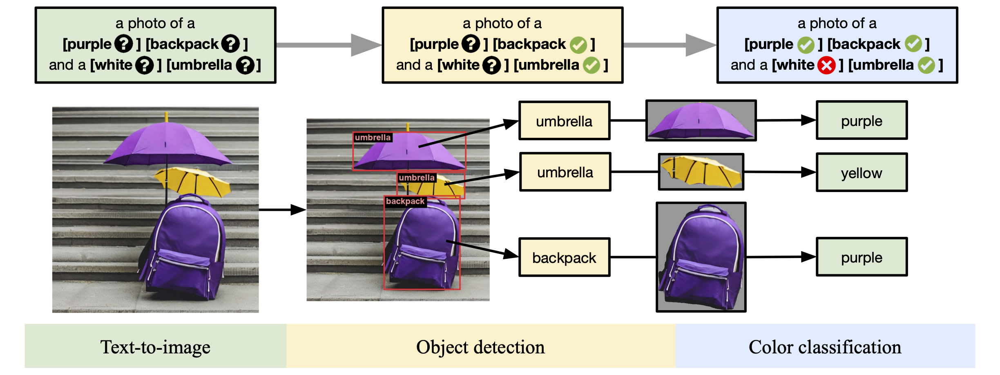
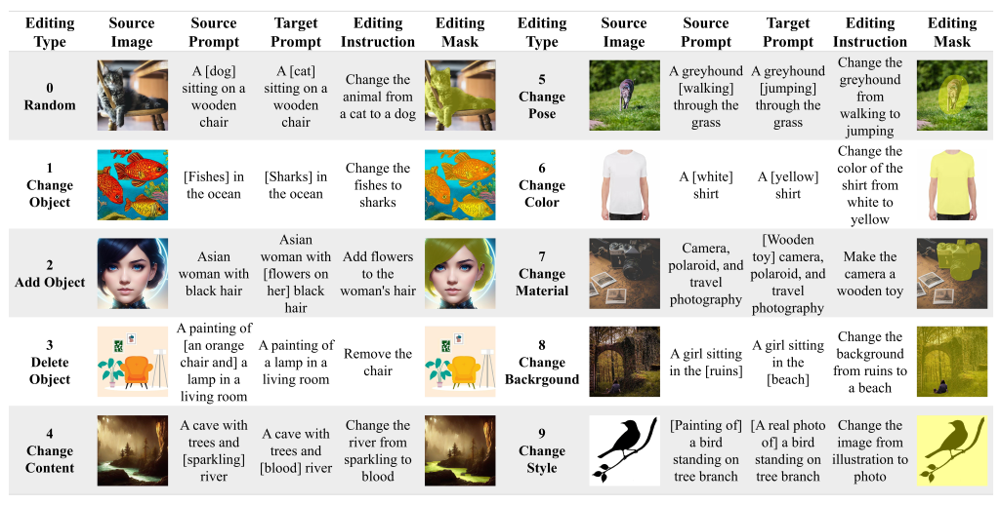

POST /acp/session
输入：任务请求（messages、context 与关联 ID）。
输出：{ session_id, events_url, status: running }。
MULTIMODAL AGENT · REVIEW DOCUMENT
从统一 POST /acp/session 请求开始，系统先归一化当前任务，再依据版本化 Rxx Capability Catalog 一次性生成完整展开的 Rxx DAG。每个节点恰好绑定一个稳定能力编号；代码随后为节点选择当前可用的 Provider、模型、endpoint 与 Rewriter，逐节点生成可校验 Prompt / Spec 并执行，最终进入统一质量验收和交付。
公开输入保持不变；Low、High 和后续能力复用同一事件信封。Rxx DAG、binding 与 Prompt 都由内部 Planning / Runtime 形成。
POST /acp/session输入：任务请求（messages、context 与关联 ID）。
输出：{ session_id, events_url, status: running }。
GET /acp/sessions/{session_id}/events?after_seq={seq}输入：必填 session_id；可选数值 after_seq，或数值 Last-Event-ID header 作为回放 cursor。
语义：补发全部 seq > cursor 的事件，再维持实时 SSE 流；不要传完整 event_id。
每条输出：event_id、seq、kind、display_text、payload。
结束：收到 runtime.completed 或 runtime.error。
route_id、model、provider、endpoint、prompt_id 或 DAG。↳ 表示它属于上一层对象。POST /acp/session| 参数 | 谁提供 | 是否必传 / 默认值 | 解释 |
|---|---|---|---|
request_id | 主 Elo 传入 | 可选，生产建议传 | 本次 HTTP 调用的追踪编号，用来串联前端、网关和 MMAgent 日志。它负责查问题，不负责防重复。 |
conversation_id | 主 Elo 传入 | 可选，生产建议传 | 当前任务属于哪一轮 Elo 对话。相同对话可以包含多次 Agent 任务。 |
user_id | 主 Elo 传入 | 可选，生产建议传 | 任务发起人，用于权限、审计和产物归属。真正的身份校验仍由 Elo 网关完成。 |
project_id | 主 Elo 传入 | 可选，生产建议传 | 任务所属项目或工作空间。它只表示归属，不是会话号、任务号或去重键。 |
idempotency_key | 主 Elo 传入 | 可选，生产强烈建议传 | 一次新的业务执行对应一个唯一 key，并由主 Elo 使用 UUID v4 自动生成，例如 550e8400-e29b-41d4-a716-446655440000。创建成功后，接口返回与这次执行对应的唯一 session_id；网络重试必须原样复用这个 UUID，并继续使用原 session_id 订阅，不能重新生成 key，避免重复执行和重复扣费。 |
access_mode | 主 Elo 按授权结果传入 | 可选，默认 standard | standard 可能需要费用确认；full_access 可继续执行，但不能绕过安全规则，也不能由不可信客户端自行提升。 |
execution_mode | 主 Elo 传入 | 可选，默认 wait_for_result | wait_for_result 会等待最终素材和质量结果；submit_only 在规划与提交完成后收口。当前不支持 plan_only。 |
messages[] | 主 Elo 传入 | 必传，至少一条有效内容 | 本次任务的主要输入。用户目标、数量、风格、比例、限制条件和媒体引用都从这里进入。 |
↳ role | 主 Elo 传入 | 必传 | 消息角色，使用 system、user 或 assistant。 |
↳ name | 主 Elo 传入 | 可选 | 发言方名称；没有明确名称时不传。 |
↳ content | 主 Elo 传入 | 必传 | 可以直接是一段字符串，也可以是包含文字、图片、视频、音频或文件的多模态内容块数组。 |
↳ ↳ content[].type | 主 Elo 传入 | content 为数组时必传 | 内容块类型，只使用 text、image_url、video_url、audio_url。 |
↳ ↳ ↳ text | 主 Elo 传入 | type=text 时必传 | 用户需求正文，或对某个媒体素材用途的补充说明。 |
↳ ↳ ↳ image_url.url | 主 Elo 传入 | type=image_url 时必传 | 参考图片地址，例如待编辑图片、风格参考图或商品图。 |
↳ ↳ ↳ video_url.url | 主 Elo 传入 | type=video_url 时必传 | 参考视频地址，例如待分析、剪辑、续写或风格参考的视频。 |
↳ ↳ ↳ audio_url.url | 主 Elo 传入 | type=audio_url 时必传 | 参考音频地址，例如配音、声音参考或待处理音频。 |
context | 主 Elo 传入 | 可选，默认空对象 | 任务背景。当前公开输入使用 conversation_summary 和 task_focus。 |
↳ conversation_summary | 主 Elo 传入 | 可选 | 之前对话中仍然有效的信息，例如已经确认的目标、背景和限制条件。 |
↳ task_focus | 主 Elo 传入 | 可选 | 用户这一轮正在关注或要求处理的事情，帮助 MMAgent 区分本轮重点。 |
| 参数 | 谁生成 | 返回规则 | 解释 |
|---|---|---|---|
session_id | MMAgent ACP Adapter | 固定返回 | 这次 ACP 事件订阅会话的编号。主 Elo 保存后用于订阅和回放；它不等于真正执行任务的 job_id。 |
events_url | MMAgent | 固定返回 | 事件订阅接口的相对地址。调用方可以直接使用，不需要自己拼接路径。 |
status | MMAgent | 固定返回 | 创建成功时为 running，只表示 session 已登记和任务正在处理，不表示素材已经生成成功。 |
GET /acp/sessions/{session_id}/events| 参数 | 谁提供 | 是否必传 / 默认值 | 解释 |
|---|---|---|---|
路径 session_id | 接口 A 生成，主 Elo 原样携带 | 必传 | 订阅接口 A 创建的 ACP session。不得替换为 job_id、request_id 或 conversation_id。 |
Query after_seq | 主 Elo / SSE 客户端 | 可选 | 客户端最后已经成功处理并持久化的事件 seq。服务端返回并实时推送所有 seq > after_seq 的事件；未传时从第一条仍可回放的事件开始。 |
Header Last-Event-ID | SSE 客户端重连时携带 | 可选 | 与 after_seq 表示相同游标，值必须是非负整数 seq。两者同时存在时 after_seq 优先；不得填写 JSON 中的完整 event_id。 |
Header Accept | 主 Elo / SSE 客户端 | 可选，建议传 | 值为 text/event-stream，声明客户端需要 SSE 事件流响应。 |
session_id：接口 A 返回的这次任务会话号，主 Elo 原样放进订阅路径。after_seq：客户端已经处理并保存到第几条事件；例如保存到 seq=5，下次传 after_seq=5，服务端就返回并继续推送 seq>5 的事件。Last-Event-ID：SSE 断线重连时携带的同一个位置，也填写数字 seq，不能填写完整的 event_id。Accept：告诉服务端需要持续的 SSE 流，值为 text/event-stream。接口 A 返回 session_id
↓
主 Elo 使用 session_id 订阅事件
↓
收到 seq=1、2、3……并保存最后处理的 seq
↓
断线后携带 after_seq=3 或 Last-Event-ID: 3 重连
↓
服务端补发 seq>3 的事件，并继续实时推送两者同时传入时，以 after_seq 为准；两者都表示数字顺序号 seq，不是事件的完整字符串编号 event_id。
after_seq：客户端主动查询、手动重连或调试时使用。Last-Event-ID：标准 SSE 客户端断线自动重连时自动携带。| 参数 | 出现时机 | 解释 | 前端 / 主 Elo 怎么用 |
|---|---|---|---|
SSE event: | 每条事件 | 事件名称，必须与 JSON 信封中的 kind 完全一致。当前分为 5 类：
| 按事件名称分发：session.created 初始化会话；运行进度类更新进度文案；提示词、工具和质量类展示当前处理步骤；等待用户操作类弹出补充信息或确认入口；最终结束类停止订阅并展示结果或错误。 |
SSE id: | 每条事件 | 当前事件的数字顺序号，值必须与 JSON 信封中的 seq 完全一致。 | 事件处理并保存成功后，将它记录为断线续传游标；重连时传给 after_seq 或 Last-Event-ID，不要使用完整 event_id。 |
SSE data: | 每条事件 | 一个完整、可独立解析的 ACP JSON 事件信封，包含事件身份、类型、展示文案和业务数据。 | 先解析固定信封字段，再根据 kind 读取对应的 payload；不要假设所有事件的 payload 都有相同字段。 |
↳ protocol | 每条事件 | 公共协议名称，当前约定为 acp.v1；它表示这是 ACP v1 事件，不代表具体业务模块。 | 用于识别协议族；真正决定 payload 字段如何解析的是 schema_version。遇到不支持的协议时应停止解析并记录兼容性错误。 |
↳ session_id | 每条事件 | 接口 A 创建并返回的 ACP 订阅会话编号，同一条事件流中的事件均携带该值。 | 校验事件是否属于当前订阅，并作为订阅、回放和日志关联键；它不能替代真正执行任务的 job_id。 |
↳ event_id | 每条事件 | 单条事件独立且唯一的完整编号，用于精确定位某一次事件记录。 | 保存到日志或审计记录中以便排障；它不是有序数字，不能代替 seq 作为断线续传游标。 |
↳ seq | 每条事件 | 当前 session 内从 1 开始单调递增的事件顺序号，也是 SSE id: 的值。 | 按 seq 去重并顺序消费；只有事件处理和持久化成功后才更新本地游标，避免重连时漏掉事件。 |
↳ kind | 每条事件 | 业务事件类型，是事件语义的唯一事实来源；其值必须与上方 SSE event: 完全一致。 | 根据 kind 分发到对应处理器；若它与 SSE event: 不一致，应按协议错误记录并停止处理该事件。 |
↳ display_text | 每条事件 | 由 MMAgent 整理并脱敏后的简短中文状态文案，不包含内部 Prompt、密钥或原始错误堆栈。 | 可以直接展示为进度说明；业务判断仍应读取 kind 和 payload，不要根据文案内容判断任务状态。 |
↳ payload | 每条事件 | 当前事件的机器可读业务对象。除 schema_version 外，其余子字段均按 kind 和执行阶段选择性返回；不适用的字段直接省略，不传空字符串，也不要求用 null 占位。 | 只读取当前事件实际存在的字段，并为缺省字段设置安全默认行为；用于更新进度、任务、素材、费用、质量或错误状态。 |
↳ ↳ schema_version | 每条事件 | payload 的公开字段结构版本，当前为 f09.sse.v1，与协议名称 acp.v1 分工不同。 | 解析 payload 前先校验版本；支持同一主版本时按兼容规则解析，不支持时保留原始事件并提示升级。 |
↳ ↳ timestamp_ms | Runtime 过程事件按需返回 | 内部 Runtime 事件发生时的 Unix 毫秒时间戳；session.created 和聚合终态事件可能不返回。 | 可用于耗时分析和排障，但事件展示顺序与断线续传必须以 seq 为准，不能依赖时间戳排序。 |
↳ ↳ source / source_event_type | Runtime 过程事件按需返回 | source 表示事件来源模块，source_event_type 表示映射前的内部事件类型；会话建立和聚合终态事件可能不返回。 | 仅用于技术排障、指标统计和内部事件追溯，正常用户界面不展示，也不应据此替代公共 kind 做业务判断。 |
↳ ↳ job_id | Runtime 接受请求并建立实际任务后 | job_id 是本次实际执行工作的总任务编号。它把后续的模型调用、费用记录、生成进度、多个图片/视频子任务和最终产物关联到同一个任务下。刚创建 ACP session 时任务可能还未建立，因此前几条事件中可能暂时没有该字段。 | 主 Elo 在事件中首次收到 job_id 后应保存，并用它查询任务状态、成本和最终产物。session_id 只标识 SSE 订阅通道，job_id 才标识真正执行的任务；一次复杂生成只有一个总 job_id，但可以包含多个 provider_task_id 子任务。 |
↳ ↳ trace_id | 具备链路追踪信息的事件按需返回 | 用于串联 Planner、Runtime、节点执行和 Provider 日志的链路追踪编号；没有产生追踪上下文的事件不返回。 | 排障时与 session_id、job_id 一起提交；前端不展示，也不能把它当作任务编号。 |
↳ ↳ route_id | 路由完成后的相关事件按需返回 | Planner 选定的稳定能力路线编号，例如 R01。它由 MMAgent 决策，后续事件不保证重复携带。 | 首次收到后可缓存在任务详情中，用于解释选择了哪类能力；普通调用方不在请求中指定或覆盖它。 |
↳ ↳ node_id | 仅 DAG 节点相关事件返回 | 标识当前事件属于 DAG 中的哪个执行节点。非 DAG 简单任务、会话级事件、路由级事件和终态汇总事件均不返回该字段，不传空字符串，也不要求传 null。 | 有值时按 node_id 分别更新并行素材节点状态；没有该字段时按整个任务或当前阶段处理，不能把缺省理解为异常。 |
↳ ↳ progress | 可计算进度的过程事件按需返回 | 当前阶段、已完成数量、总数或百分比等进度信息；无法可靠计算时直接省略，不返回虚构百分比。 | 有值时驱动进度条或步骤状态；无值时仅展示 display_text，不要把缺省当作 0% 或任务停滞。 |
↳ ↳ prompt_summary | prompt.rewriting 或质量检查事件按需返回 | Prompt 的 ID、版本、来源、改写和校验摘要，不包含完整 Provider Prompt、用户敏感原文或密钥。 | 用于审计 Prompt 版本、改写结果和质量检查，不直接展示完整内容，也不能据此还原内部 Prompt。 |
↳ ↳ provider | Provider 绑定或调用事件按需返回 | 当前节点实际绑定的外部服务方，例如 RunningHub；纯文本规划或尚未绑定 Provider 时不返回。 | 用于调用追踪、成本归因和故障定位；缺省表示当前事件不涉及 Provider，不代表任务异常。 |
↳ ↳ provider_task_id / task_id | Provider 接受子任务后按需返回 | 外部服务为单张图片、单段视频等素材生成分配的子任务号。一个总 job_id 可以对应多个 Provider 子任务号。 | 查询或排查某个具体素材子任务；不能用它订阅 ACP session，也不能替代总任务 job_id。 |
↳ ↳ provider_status | Provider 状态事件按需返回 | 单个外部子任务的状态，例如 running、success 或 failed；它只代表该子任务，不代表整个任务。 | 更新对应素材卡片或 DAG 节点；任务最终结论必须读取终态 kind 和 aggregate_status。 |
↳ ↳ aggregate_status | 终态事件固定返回 | 整个任务的聚合结论。生成结果常见为 success、partial_success、failed、blocked；流程控制结果还可能为 planned、submitted、input_required 或 approval_required。 | 结合终态 kind 决定成功、部分成功、失败、等待输入或等待审批页面；不能用单个 provider_status 推断整体结果。 |
↳ ↳ generation_status | 质量验收改变最终结论时返回 | 保存质量验收之前的素材生成结论。例如素材已生成成功但 VLM 验收失败时，generation_status 可为 success，而 aggregate_status 为 failed。 | 同时展示“生成结果”和“验收结果”，避免把 Provider 成功误判为可交付成功；字段缺省表示质量验收没有改写最终结论。 |
↳ ↳ summary | 终态按结果类型返回 | 面向主 Elo 的结构化结果摘要，通常包含状态、数量和简短说明；纯 submitted 结果可能不返回。 | 用于结果页总览；缺省时根据 kind、aggregate_status 和 display_text 展示，不能判定为执行失败。 |
↳ ↳ artifact | 终态事件固定返回 | 本轮终态结果的引用对象，说明结果类型，并在任务已建立时携带关联 job_id；它可以表示内容包、Provider 结果、计划、提交、待审批、待补充或拒绝结果。 | 根据 artifact.kind 跳转到内容包、任务详情或用户处理页面；先判断字段是否存在，再读取其中的 job_id。 |
↳ ↳ output_urls[] | 存在可公开访问产物时返回 | 最终可访问的图片、视频、文件或内容包地址数组。没有可公开地址时可能省略或返回空数组，这不等同于任务一定失败。 | 校验 URL 后用于预览、下载或交给下游应用；是否成功仍以终态 kind 和 aggregate_status 为准。 |
↳ ↳ assets[] | 终态存在素材或可追踪结果时返回 | 结构化素材列表，通常包含素材 ID、类型、能力、状态、Provider 子任务号及公开 URL；某些计划或等待状态也可能返回占位结果。 | 逐项渲染素材卡片并保留素材级追踪；不要只依赖 output_urls[]，因为 assets[] 还包含状态和身份信息。 |
↳ ↳ material_status[] | 终态存在素材计划或素材结果时返回 | 每个计划素材的聚合状态，标明素材成功、失败、重试、跳过、取消或等待处理，并可关联 task_id、URL 和公开错误。 | 用于显示多素材完成明细并定位部分失败项；数组缺省表示当前结果没有素材级计划，不代表总任务失败。 |
↳ ↳ cost_summary | 存在费用、费用估算或明确零费用结论时返回 | 本次任务的预估或实际费用、币种、计费数量和费用来源；无需计费的计划或等待类结果可能返回明确的零费用摘要。 | 用于费用展示、审批和账务核对；应区分预估值与实际值，字段缺省时不要自行推算费用。 |
↳ ↳ quality_summary | 终态事件固定返回 | 内容、Prompt 与媒体产物的质量验收结论、评分和问题摘要；无法执行真实 VLM 验收时会明确标记为 not_evaluated、deferred 或不可用状态。 | 决定产物是否可交付、是否需要修复或补验；不得把“未验收”当作“验收通过”，也不能只看 Provider 成功状态。 |
↳ ↳ error / error_code / retriable | 失败、异常或素材子项失败时按需返回 | 公开错误对象及其稳定错误码和重试建议；完整结构通常为 error.category、error.code、error.message、error.retriable，不会返回内部堆栈或敏感信息。 | 向用户展示公开 message，按 retriable 决定自动重试或人工处理，并用稳定 code 做统计；不要展示内部日志。 |
把“对话关联、执行去重、SSE 订阅”拆开看，才能正确处理重试与权限。
request_id 用于日志、事件和问题定位；入口可生成，不是幂等键。conversation_id 只把本次任务归入 Elo 对话 / thread，可包含多次 Agent 会话，不负责去重或授权。
user_id、project_id 仅是关联维度：Elo 网关应注入 / 覆盖身份并校验项目成员关系，不能把客户端请求体当作可信凭证。
idempotency_key 是实际执行去重键：一个新的 key 对应一次业务执行和一个返回的 session_id。网络重试必须原样复用，主 Elo 继续使用首次返回的 session_id 订阅；缺失或更换 key 可能再次创建付费任务。
access_mode 是服务端授予的授权 / 费用策略，客户端不得自行设为 full_access；execution_mode 只决定提交后立即返回还是等待结果。
session_id 只用于 GET /acp/sessions/{session_id}/events；job_id 才是实际执行、成本和 provider 任务关联的主键。provider_task_id 仅是外部供应商的任务号。
event_id 是事件完整标识；seq 是每个 session 单调递增的数值序号。after_seq 与 SSE Last-Event-ID 都传 seq，补发规则是 seq > cursor。
POST → session_id → SSE event_id / seq每次 POST 建立可订阅会话；SSE payload 再关联到实际的 job_id，不要把 session 与 job 视为同一或一对一 ID。
idempotency_key → Runtime job_id → provider_task_id去重落在 Runtime job；provider_task_id 只在调用外部供应商后出现。
对外接入前的边界：仅携带 user_id / project_id 不能保护跨用户订阅；Elo 网关还必须校验会话归属，再允许访问对应的 SSE 流。
状态声明：带“目标字段 / 建议字段”标签的内容是 TO-BE 文档设计，不表示当前代码或 SSE schema 已经实现。
主 Elo 管对话、可信上下文、工具边界和公开展示；MMAgent 管媒体生产。一个任务会持续回多条过程事件，关键阶段再返回当前业务结果。
media.run(action)模型只能填 run 或 confirm_pendingEloModelInput · 任务材料messages[] + context；当前 Host 从可信对话历史组装。EloTrustedContext · 系统信息thread / turn / call IDs + policy + confirmation authorization；模型看不到也不能改。MediaService 直接进入原 MMAgent production line接单并创建或复用媒体 Job。
messages/contextjob_id, request_id, conversation_id, idempotency_keyMediaAgentEvent.type=startedAgentEvent 脱敏投影，不是主 Elo 原有通用字段thinking读懂对话和媒体输入，整理本次任务。
thinking，不返回完整内部 Prompt决定要做哪些媒体工作和先后顺序。
planning 摘要，不公开 endpoint / binding代码把业务能力绑定到当前可用实现。
capability, atomic_capability, binding, provider, model, endpointplanning，不穿透实现细节花钱前判断安全、预算和是否需要用户确认。
allowed, findings, estimated_credits, estimated_cost_*, requires_confirmationconfirmation_required / need_more_info / error，或继续；Decision 可为 needs_confirmation / rejected改写 Provider Prompt，提交、轮询并下载结果。
tool_call → submitted → tool_result（可多次），必要时 error整理素材、成本和交付结果，回到同一 Elo turn。
AgentDecision、assets、provider evidence、costcompleted / error + 脱敏 Decision / tool result没有独立在线质量 Agent；Prompt 安全/结构检查在 06，程序化技术/交付聚合在 08，离线生成质量看 1.8。
多条 AgentEvent 先入 Elo 事件存储，再通知 UI。状态变化立即发；等待 Provider 时按查询进度回传。
一个阶段性或最终 AgentDecision 回到同一 Elo tool result；一个对象一次只有一种 kind。
needs_confirmation → Elo 询问用户 → 用户明确确认 → media.run(confirm_pending) → 找回同一 pending Job 继续。
TO-BE 主链不再设置独立 LLM Route Selector。Planner 在一次输出中决定完整节点、依赖与每个节点唯一的 Rxx；其后全部是校验、实现绑定和逐节点编译。
rxx_workflow_dag.v1 一次性声明所有业务节点、数据依赖、复合展开来源与 outcome 绑定。示例只展示契约；Route 分类与允许子 Route 以实际版本化 Catalog 为准。
{
"schema_version": "rxx_workflow_dag.v1",
"capability_catalog_version": "2026-07-14",
"status": "planned",
"reason": "任务信息充分，所有节点均已选择有效 Rxx 能力",
"nodes": [
{
"node_id": "n01",
"route_id": "R01",
"title": "生成内容包与素材规划",
"objective": "生成结构化内容包及供下游素材节点消费的规划数据",
"inputs": [{"source": "task_brief", "ref": "/task", "selector": null}],
"outputs": [
{"key": "content_package", "type": "content_package", "cardinality": "single", "quantity": 1, "description": "结构化内容包"},
{"key": "asset_plan", "type": "asset_plan", "cardinality": "collection", "quantity": 7, "description": "供下游媒体节点使用的素材规划"}
],
"requirement_refs": [],
"outcome_refs": ["/outcomes/0"]
},
{
"node_id": "n02",
"route_id": "R03",
"title": "生成演示页视觉 1",
"objective": "根据素材规划生成第一项演示视觉",
"inputs": [{"source": "node_output", "ref": "n01.asset_plan", "selector": "/items/0"}],
"outputs": [{"key": "image", "type": "image", "cardinality": "single", "quantity": 1, "description": "第一项演示视觉"}],
"requirement_refs": [],
"outcome_refs": ["/outcomes/0"]
},
{
"node_id": "n03",
"route_id": "R03",
"title": "生成演示页视觉 2",
"objective": "根据素材规划生成第二项演示视觉",
"inputs": [{"source": "node_output", "ref": "n01.asset_plan", "selector": "/items/1"}],
"outputs": [{"key": "image", "type": "image", "cardinality": "single", "quantity": 1, "description": "第二项演示视觉"}],
"requirement_refs": [],
"outcome_refs": ["/outcomes/0"]
},
{
"node_id": "n04",
"route_id": "R03",
"title": "生成演示页视觉 3",
"objective": "根据素材规划生成第三项演示视觉",
"inputs": [{"source": "node_output", "ref": "n01.asset_plan", "selector": "/items/2"}],
"outputs": [{"key": "image", "type": "image", "cardinality": "single", "quantity": 1, "description": "第三项演示视觉"}],
"requirement_refs": [],
"outcome_refs": ["/outcomes/0"]
},
{
"node_id": "n05",
"route_id": "R03",
"title": "生成演示页视觉 4",
"objective": "根据素材规划生成第四项演示视觉",
"inputs": [{"source": "node_output", "ref": "n01.asset_plan", "selector": "/items/3"}],
"outputs": [{"key": "image", "type": "image", "cardinality": "single", "quantity": 1, "description": "第四项演示视觉"}],
"requirement_refs": [],
"outcome_refs": ["/outcomes/0"]
},
{
"node_id": "n06",
"route_id": "R03",
"title": "生成演示页视觉 5",
"objective": "根据素材规划生成第五项演示视觉",
"inputs": [{"source": "node_output", "ref": "n01.asset_plan", "selector": "/items/4"}],
"outputs": [{"key": "image", "type": "image", "cardinality": "single", "quantity": 1, "description": "第五项演示视觉"}],
"requirement_refs": [],
"outcome_refs": ["/outcomes/0"]
},
{
"node_id": "n07",
"route_id": "R05",
"title": "生成动态素材 1",
"objective": "根据素材规划生成第一项动态素材",
"inputs": [{"source": "node_output", "ref": "n01.asset_plan", "selector": "/items/5"}],
"outputs": [{"key": "video", "type": "video", "cardinality": "single", "quantity": 1, "description": "第一项动态素材"}],
"requirement_refs": [],
"outcome_refs": ["/outcomes/0"]
},
{
"node_id": "n08",
"route_id": "R05",
"title": "生成动态素材 2",
"objective": "根据素材规划生成第二项动态素材",
"inputs": [{"source": "node_output", "ref": "n01.asset_plan", "selector": "/items/6"}],
"outputs": [{"key": "video", "type": "video", "cardinality": "single", "quantity": 1, "description": "第二项动态素材"}],
"requirement_refs": [],
"outcome_refs": ["/outcomes/0"]
}
],
"edges": [
{"from": "n01", "to": "n02", "output_refs": ["n01.asset_plan"]},
{"from": "n01", "to": "n03", "output_refs": ["n01.asset_plan"]},
{"from": "n01", "to": "n04", "output_refs": ["n01.asset_plan"]},
{"from": "n01", "to": "n05", "output_refs": ["n01.asset_plan"]},
{"from": "n01", "to": "n06", "output_refs": ["n01.asset_plan"]},
{"from": "n01", "to": "n07", "output_refs": ["n01.asset_plan"]},
{"from": "n01", "to": "n08", "output_refs": ["n01.asset_plan"]}
],
"expansions": [
{
"composite_route_id": "R01",
"composite_node_id": "n01",
"expanded_node_ids": ["n02", "n03", "n04", "n05", "n06", "n07", "n08"]
}
],
"outcome_bindings": [
{
"outcome_ref": "/outcomes/0",
"output_refs": [
"n01.content_package",
"n02.image",
"n03.image",
"n04.image",
"n05.image",
"n06.image",
"n07.video",
"n08.video"
]
}
],
"blocking_issue_refs": []
}route_id。 不输出多个候选 Route，不输出 operation / modality 作为另一套权威分类，也不输出 provider、model、endpoint、adapter、binding_id、rewriter_id、prompt_id、最终 Provider Prompt 或价格。Runtime 执行期间不再添加第二层业务 DAG。nodes[].route_id 必填且恰好一个。route_id 必须存在于当前 capability_catalog_version。route_id 必须 active 且 planner_eligible。required_inputs。produced_outputs。node_id 图内唯一，并按拓扑顺序编号。inputs[].selector 可选；存在时使用 JSON Pointer 定位输出内部项，但边仍引用根输出 node_id.output_key。node_output 输入必须有对应入边。static_full 静态完整展开若复合能力自身是真实可执行步骤并产生下游需要的中间输出，则父节点保留在 nodes[]；例如 R01 产出 content_package 与 asset_plan。
若 composite 只是编排宏、无独立执行价值，则不作为可执行节点；直接输出可绑定的原子子节点，并在 expansions[] 记录来源。
信息充分，输出完整 nodes / edges / expansions / outcome_bindings。
TaskBrief 的澄清项阻止可靠 Planning；节点数组保持为空，并引用真实 open issue。
本轮无需执行多媒体业务任务；返回空图与明确原因。
R00 可作为 Runtime 澄清能力记录，但不得伪装成用户业务 DAG 中的执行节点来代替 blocked。
当 TASK_BRIEF_NORMALIZER.planning_readiness.status = needs_clarification 且未决问题阻止可靠 Planning 时，返回空图和真实 blocking_issue_refs。
{
"schema_version": "rxx_workflow_dag.v1",
"capability_catalog_version": "2026-07-14",
"status": "blocked",
"reason": "TaskBrief 存在阻止可靠 Planning 的未决问题",
"nodes": [],
"edges": [],
"expansions": [],
"outcome_bindings": [],
"blocking_issue_refs": [
"/open_issues/0"
]
}JSON schema · node_id 唯一 · route_id 存在且可规划
输入输出类型匹配 · composite 已按 static_full 展开 · expansions 引用合法
边引用合法 · 无重复边 / 自环 / 有向环 · 所有 outcome 已覆盖
所有 input_ref / requirement_ref 合法
两份 Registry 分别回答“应该选择哪个稳定能力”与“该能力当前由什么实现执行”，不能混成一张表，也不能把实现字段暴露给 Planner。
TASK_BRIEF_NORMALIZER 只形成八字段 TaskBrief；Runtime 在调用 Planner 时注入当前、带版本的 Capability Catalog 快照。
通俗讲：Normalizer 负责把“用户说的话”整理成 TaskBrief；Runtime 再把“系统此刻有哪些能力可用”的 Catalog 放进同一个输入包。Planner 同时看两者：TaskBrief 决定“要做什么”，Catalog 限定“能选什么”。因此下方整个 JSON 是 Planner 的输入，不是 TaskBrief 单独的输出。
{
"task_brief": {
"task": {},
"outcomes": [],
"requirements": {
"must": [],
"prefer": [],
"must_not": [],
"acceptance": []
},
"input_refs": [],
"context_facts": [],
"open_issues": [],
"planning_readiness": {
"status": "ready"
},
"request_policy": {
"access_mode": "standard",
"execution_mode": "wait"
}
},
"capability_catalog": {
"schema_version": "rxx_capability_catalog.v1",
"catalog_version": "2026-07-14",
"catalog_scope": "complete",
"routes": []
}
}status=active、planner_eligible=true，并且与节点输入输出契约、当前 access_mode 均匹配的能力。完整、结构化、带版本，是 Rxx 能力语义的唯一事实源；包含 active、disabled 与 reserved 状态，不包含 provider、model 或 endpoint。
{
"schema_version": "rxx_capability_catalog.v1",
"catalog_version": "2026-07-14",
"catalog_scope": "complete",
"routes": [
{
"route_id": "R04",
"capability": "image_to_video",
"display_name": "图生视频",
"description": "以已有图片作为视觉起点生成视频",
"route_kind": "atomic",
"status": "active",
"planner_eligible": true,
"allowed_access_modes": [
"standard",
"full_access"
],
"accepted_inputs": [
"image",
"text_spec"
],
"required_inputs": [
"image"
],
"produced_outputs": [
"video"
],
"supports_batch": false,
"selection_rule": "任务明确依赖已有图片生成动态视频时使用",
"exclusion_rule": "没有图片输入、完全从文本生成视频时不得使用",
"expansion_policy": null
}
]
}capability_catalog；缺少完整 Catalog 时 Planner 返回 blocked，不依赖模型记忆猜测 Rxx。status=disabled、planner_eligible=false。Planner 不得创造未定义 Rxx。不提供给 Planner、不写入业务 DAG；以 route_id 为关联键，可为同一 Rxx 保留多个当前可用实现。
{
"route_id": "R03",
"bindings": [
{
"binding_id": "r03-provider-image-v1",
"status": "active",
"provider": "provider_name",
"model": "model_name",
"endpoint_ref": "internal_endpoint_reference",
"adapter": "image_generation_adapter",
"rewriter_id": "IMAGE_PROMPT_REWRITER",
"allowed_access_modes": [
"standard",
"full_access"
]
}
]
}route_id · access_mode · binding status · 节点输入 / 输出类型
字段 / 长度 / 比例 / 时长 · Provider 可用性 · 模型能力
权限 · 成本策略 · 地区约束
{
"node_id": "n02",
"route_id": "R03",
"binding_id": "r03-provider-image-v1",
"provider": "provider_name",
"model": "model_name",
"endpoint_ref": "internal_endpoint_reference",
"adapter": "image_generation_adapter",
"rewriter_id": "IMAGE_PROMPT_REWRITER"
}endpoint_ref 只是内部引用，不展示真实 URL 或密钥；resolver_key 不是 Planner 必须输出的字段。Provider 或模型不可用时，Resolver 可以选择同一 route_id 的其他 active binding；原始 DAG 与 route_id 不被回写或改变。
没有满足能力、权限、类型或预算约束的 endpoint / model 时，节点进入 preflight_blocked。
Prompt 负责理解、内容/规格生成、逐节点编译与验证；Provider binding 属于代码 Registry / Resolver，不属于任何 Prompt 的选择职责。
INTENT_CLASSIFIER.mdCURRENT ID 当前真实文件；目标责任显示名为 TASK_BRIEF_NORMALIZER，不创建同名假文件。MULTIMODAL_DAG_PLANNER.mdTO-BE PURPOSE TaskBrief + complete Rxx Capability Catalog → static fully expanded RxxWorkflowDag。ROUTE_ID_SELECTOR.mdCURRENT · active / runtime=true TARGET · LEGACY / DEPRECATED 只用于解释 AS-IS 旧实测链路。CONTENT_PACKAGE_GENERATOR.mdR01 · content package + asset_planVIDEO_STORYBOARD_GENERATOR.mdR02 · 分镜、脚本、镜头规格TEXT_CONTENT_GENERATOR.mdR10 · 文案、标题、脚本、大纲FACT_VERIFICATION_PLANNER.mdR11 · 声明与来源核验WORD_DOCUMENT_PACKAGE_GENERATOR.mdR15 · Word 内容包FIXED_LAYOUT_PDF_PACKAGE_GENERATOR.mdR16 · PDF 内容包EXCEL_WORKBOOK_PACKAGE_GENERATOR.mdR17 · Excel 内容包VIDEO_UNDERSTANDING_ANALYZER.md独立视频理解，不进入内容产出链路IMAGE_PROMPT_REWRITER.mdR03 · 文生图节点IMAGE_EDIT_PROMPT_REWRITER.mdR12 · 图片编辑节点TEXT_TO_VIDEO_PROMPT_REWRITER.mdR05 · 文生视频节点IMAGE_TO_VIDEO_PROMPT_REWRITER.mdR04 · 图生视频节点VIDEO_EDIT_PROMPT_REWRITER.mdR08 · 视频加工节点TEXT_TO_SPEECH_SPEC_REWRITER.md文本转语音规格AUDIO_TRANSCRIPTION_SPEC_REWRITER.md音频转写规格VLM_REFERENCE_UNDERSTANDING.md参考媒体理解VLM_IMAGE_UNDERSTANDING.md独立图片理解VLM_VIDEO_UNDERSTANDING.md独立视频理解PROVIDER_PROMPT_SAFETY_CHECK.md节点 Prompt 安全与约束检查TEXT_QUALITY_GATE.md文本通用质量门PACKAGE_QUALITY_GATE.md内容包通用质量门VISUAL_QUALITY_GATE.md视觉通用质量门VIDEO_QUALITY_GATE.md视频通用质量门AUDIO_QUALITY_GATE.md音频通用质量门ACP_PACKAGE_QUALITY_CHECK.md内容包产物验收ACP_IMAGE_QUALITY_CHECK.md图片产物验收ACP_IMAGE_QUALITY_REPAIR.md图片定向修复ACP_VIDEO_QUALITY_CHECK.md视频产物验收ACP_VIDEO_QUALITY_REPAIR.md视频定向修复STRICT_JSON_REPAIR.md严格结构修复IMAGE_PROMPT_DETERMINISTIC_FALLBACK.md图片 Prompt 确定性 fallbackIMAGE_EDIT_PROMPT_DETERMINISTIC_FALLBACK.md图片编辑确定性 fallbackTEXT_TO_VIDEO_PROMPT_DETERMINISTIC_FALLBACK.md文生视频确定性 fallbackIMAGE_TO_VIDEO_PROMPT_DETERMINISTIC_FALLBACK.md图生视频确定性 fallbackVIDEO_EDIT_PROMPT_DETERMINISTIC_FALLBACK.md视频编辑确定性 fallbackTEXT_TO_SPEECH_SPEC_DETERMINISTIC.md文本转语音确定性规格AUDIO_TRANSCRIPTION_SPEC_DETERMINISTIC.md音频转写确定性规格VOICE_SEPARATION_SPEC_DETERMINISTIC.md声音分离确定性规格Rewriter 必须在 DAG 已展开且代码已完成实现绑定之后逐节点运行；它生成节点执行规格，不生成第二张 DAG，也不重新选择 Rxx。
asset_plan[] 只是 R01 / R02 等内容节点可能产生的上游输出，不再是所有节点生成 Prompt 的统一入口；其中的素材意图也不是最终 Provider Prompt。{
"task_brief": "当前 TaskBrief 或必要引用",
"dag_node": "当前节点定义",
"route_id": "R03",
"binding": {
"provider": "provider_name",
"model": "model_name",
"endpoint_ref": "internal_endpoint_reference",
"rewriter_id": "IMAGE_PROMPT_REWRITER"
},
"resolved_inputs": [
"外部 input_ref",
"已完成的上游节点输出"
],
"provider_constraints": {
"accepted_fields": [],
"length_limit": null,
"supported_ratio": [],
"supported_duration": []
}
}{
"node_id": "n02",
"route_id": "R03",
"prompt_id": "IMAGE_PROMPT_REWRITER",
"prompt_version": "x.y.z",
"provider_prompt": "internal only",
"provider_params": {},
"validation": {
"passed": true,
"errors": []
},
"fallback_used": false
}provider_prompt 只进入内部 evidence。公开 SSE 只暴露 prompt_id、version、source、status、validation 与 trace 摘要；不暴露真实 endpoint URL、密钥、完整 Prompt 或系统指令。图片和视频能力不再由现有 Agent、LLM 或 VLM 自行打分；模型与 Provider 版本使用公开评测集、官方评价代码和固定测试协议进行离线评测。
首次公开时间按论文 arXiv v1 或官方首次公开记录；开放内容按官方仓库或项目页当前公开状态整理。以下表格来自 open_source_image_video_benchmarks.md。
人话：先看对象、数量、颜色和位置有没有画对。553 条提示词规模可控，官方检测代码也容易复跑，适合做基础回归。
人话：既看“该改的改对没有”，也看“不该动的地方有没有被破坏”。有编辑掩码，局部误改能被直接定位。
人话：不只看单帧好不好看，还看主体跨帧是否一致、运动是否平滑、画面是不是真的在动。
人话：看目标对象改没改对，同时检查背景有没有乱变、前后帧是否稳定，覆盖视频编辑最常见的三类问题。
样例怎么读：每个 benchmark 下方都列出一条官方数据记录。图片 / 视频编辑类可展示源媒体与目标或编辑结果；生成类通常只有固定 Prompt 和评价协议，媒体必须由待测模型现场生成，并不存在唯一“标准答案图 / 视频”。
同一张证据板里分清“题目是什么、模型交了什么、官方怎么判”，避免把候选输出误认成标准答案。


OFFICIAL EDIT INSTRUCTIONReplace the brown bear with a panda.
把棕熊改成熊猫，同时让岩石、背景和行走动作保持原样。
证据说明：右侧是官方评测候选输出，不是唯一 gold 视频；评价同时检查编辑成功、非目标保持和跨帧稳定。
| Benchmark | 首次公开 | 关联论文 / 发表 | 规模与开放内容 | 主要评测维度 | 为什么权威 | 官方链接 | 官方代表样例 |
|---|---|---|---|---|---|---|---|
| TIFA v1.0 | 2023-03-21 | TIFA: Accurate and Interpretable Text-to-Image Faithfulness Evaluation with Question Answering；ICCV 2023 | 约 4.1K 文本输入、25.8K 问答、12 类属性；公开测试问题、数据与评价资源 | 对象、数量、颜色、材质、形状、空间关系、动作等文本—图像忠实度 | ICCV 论文；把提示词拆成可回答问题，能输出细粒度、可解释的失败证据；论文验证其与人工判断的相关性优于常用整体指标 | 论文 · 数据与模型 | 官方描述 官方问答  人话：把长 Prompt 拆成一个个能回答“是 / 否”的小问题。 |
| HRS-Bench | 2023-04-11 | HRS-Bench: Holistic, Reliable and Scalable Benchmark for Text-to-Image Models；ICCV 2023 | 13 项能力、5 大类、50 个场景；公开代码与数据 | 准确性、鲁棒性、泛化、公平性、偏差；还覆盖计数、视觉文字、情绪等能力 | ICCV 论文；覆盖能力面广，并通过人工评价验证，论文报告自动评价与人工评价平均约 95% 一致 | 论文 · 项目与数据 | 官方 Prompt 标签空间关系 + 数量 / 忠实度 生成任务没有唯一答案图：待测模型必须按该 Prompt 生成，再由官方协议检查“猫在长椅下方”和“两名儿童”。 人话：既查位置关系，也查数量有没有画错。 |
| HPS v2 / HPD v2 | 2023-06-15 | Human Preference Score v2: A Solid Benchmark for Evaluating Human Preferences of Text-to-Image Synthesis；arXiv 2023 | 798,090 次人工偏好选择、433,760 对图像；公开数据、模型与代码 | 人类整体偏好、审美、文本匹配与生成质量排序 | 大规模真实人工偏好数据；评价器面向不同来源和分布的生成图像设计，适合模型排序和同提示词多候选选择 | 论文 · 代码与数据 | 官方 Prompt   评价同一 Prompt 的多张候选由人工偏好排序。 人话：不是判断绝对对错，而是比较“人更喜欢哪一张”。 |
| T2I-CompBench / T2I-CompBench++ | 2023-07-12 | T2I-CompBench: A Comprehensive Benchmark for Open-world Compositional Text-to-image Generation；NeurIPS 2023；增强版发表于 TPAMI 2025 | 6,000 个组合提示词；3 大类、6 个子类；公开提示词、元数据、评价代码与结果 | 颜色、形状、纹理属性绑定；空间/非空间关系；复杂多对象组合 | NeurIPS 与 TPAMI 延续版本；专门诊断组合生成错误，评价维度和失败类型明确，适合模型与 Provider 横向回归 | 论文 · 代码与数据 | 官方 Prompt 标签颜色属性绑定：bench=green，bowl=blue  人话：检查颜色有没有绑定到正确对象上。 |
| GenEval 首期采用 | 2023-10-17 | GenEval: An Object-Focused Framework for Evaluating Text-to-Image Alignment；arXiv 2023 | 553 个提示词、6 类任务；公开提示词、生成脚本与检测式评价代码 | 单对象、双对象共现、数量、颜色、位置、对象—颜色绑定 | 对象级检测评价可复现，并经人工一致性实验验证；分数可直接定位到数量、颜色、位置等基础失败，适合作为基础回归集 | 论文 · 代码与数据 | 官方 Prompt 元数据 同一 Prompt 由待测模型生成 4 张图；官方检测器逐张确认画面中存在且仅存在 1 个 bench，并输出 correct 与 reason。人话：首期先把最基础的“画没画出来、数量对不对”跑稳。 |
| HEIM | 2023-11-07 | Holistic Evaluation of Text-To-Image Models；NeurIPS 2023 | 12 个方面、62 个场景、26 个模型；公开生成图片、人工评价结果与 HELM 代码 | 对齐、画质、审美、原创性、推理、知识、偏差、毒性、公平、鲁棒、多语言、效率 | Stanford CRFM / HELM 体系；NeurIPS 论文；同时评估能力、风险与效率，结果和人工评价透明可复核 | 论文 · 结果 · 代码 | 官方 Prompt 场景MS-COCO · 对齐 / 画质 每个模型都要生成自己的输出，再与自动指标和人工评价一起形成一条结果记录；没有唯一标准答案图。 人话：同一条题目从对齐、画质、风险和效率多个角度一起看。 |
| GenAI-Bench / GenAI-Rank / VQAScore | 2024-06-19 | GenAI-Bench: Evaluating and Improving Compositional Text-to-Visual Generation；VQAScore 关联论文发表于 ECCV 2024 | GenAI-Bench 公开图像/视频组合提示词与超过 80K 人工评分；GenAI-Rank 含超过 40K 人工排序评分；公开代码、数据与评价模型 | 属性、关系、逻辑、比较、高阶组合推理；图像/视频文本一致性与候选排序 | 大规模人工评分验证；同一套评价框架覆盖图像和视频；VQAScore 与多种既有指标进行系统人工相关性比较 | 论文 · 代码与数据 | 官方文本  人话：不仅查“有没有人”，还查两个人各自的动作和情绪是否对应。 |
| Benchmark | 首次公开 | 关联论文 / 发表 | 规模与开放内容 | 主要评测维度 | 为什么权威 | 官方链接 | 官方代表样例 |
|---|---|---|---|---|---|---|---|
| MagicBrush | 2023-06-16 | MagicBrush: A Manually Annotated Dataset for Instruction-Guided Image Editing；NeurIPS 2023 Datasets and Benchmarks | 10K+ 人工标注的“源图—指令—目标图”三元组；覆盖单轮、多轮、有掩码、无掩码；训练/开发集公开，测试集受控下载以降低污染 | 指令遵循、编辑结果质量、源图内容保持、多轮编辑 | NeurIPS 数据集赛道；大规模人工制作的真实图片编辑数据，既能训练也能作为统一测试集 | 论文 · 代码与数据 | 官方指令  人话：输入一张图和一句修改要求，检查结果是否按要求变化并保留原内容。 |
| PIE-Bench 首期采用 | 2023-10-02 | Direct Inversion: Boosting Diffusion-based Editing with 3 Lines of Code；ICLR 2024 | 700 张图片、10 类编辑、手工编辑掩码、7 项评价指标；公开数据和评价实现 | 编辑忠实度、非编辑区域保持、结构保持、背景保持、编辑区域文本一致性 | 同时评价“改对了没有”和“不该改的是否保持”；细粒度掩码使局部编辑评价更可复现 | 论文 · 代码与数据 | 官方类型 源 / 目标 编辑指令 编辑掩码shirt；只允许改变衬衫区域 人话：首期用它确认衬衫正确变黄，同时人物和背景不要跟着乱变。 |
| ImagenHub | 2023-10-02 | ImagenHub: Standardizing the Evaluation of Conditional Image Generation Models；ICLR 2024 | 7 类条件图像任务，每个子集约 100–200 个样例；统一约 30 个模型的推理与人工评价；公开数据、库和结果 | 文生图、掩码编辑、文本编辑、主体驱动生成/编辑、多概念组合、控制条件生成 | ICLR 论文；统一数据、推理参数和人工评分协议，解决不同编辑论文实验条件不可比的问题 | 论文 · 代码与数据 | 源描述 编辑指令 目标描述   人话：统一输入和人工协议后，不同编辑模型才可横向比较。 |
| EditVal | 2023-10-03 | EditVal: Benchmarking Diffusion Based Text-Guided Image Editing Methods；arXiv 2023 | 648 个独立编辑操作、19 个 MS-COCO 类别、13 类编辑；公开数据、自动评价流程和人工研究模板 | 增加/替换对象、大小、位置、局部部件、背景、纹理、颜色、形状、动作、视角等；同时检查内容保持 | 将编辑任务按可诊断类型标准化；自动评价经大规模人工研究验证，且明确区分编辑成功与源内容保持 | 论文 · 项目与代码 | 官方指令   人话：既查苹果是否换成橙子，也查其余画面有没有被误改。 |
| I2EBench | 2024-08-26 | I2EBench: A Comprehensive Benchmark for Instruction-based Image Editing；NeurIPS 2024 | 2,000+ 图片、4,000+ 原始/多样化指令、16 个评价维度；公开输入、指令、人工标注、各方法输出和评价脚本 | 高层语义编辑、低层视觉属性、指令遵循、内容保持、感知质量等 | NeurIPS 论文；覆盖高层和低层共 16 个维度，并逐维度开展人工感知对齐研究 | 论文 · 代码与数据 | 记录 原指令 同义指令 验收问答背景是雪地吗？  人话：不仅测一种固定说法，也测换个说法后模型还能不能理解。 |
| GIE-Bench | 2025-05-16 | GIE-Bench: Towards Grounded Evaluation for Text-Guided Image Editing；arXiv 2025 | 1,000+ 高质量编辑样例、20 个内容类别；带编辑指令、选择题和空间对象掩码；公开 benchmark JSON、下载与评价脚本 | 功能正确性；非目标区域内容保持；过度编辑检测 | 将编辑正确性转成可核验问答，并用对象掩码评价保持度；自动结果经人工评分验证，解决 CLIP 类整体分数难以识别过度编辑的问题 | 论文 · 代码与数据 | 官方指令 验收问答鸟是否已移除？答案  人话：确认鸟真的消失，同时避免背景被大面积重画。 |
| Benchmark | 首次公开 | 关联论文 / 发表 | 规模与开放内容 | 主要评测维度 | 为什么权威 | 官方链接 | 官方代表样例 |
|---|---|---|---|---|---|---|---|
| EvalCrafter | 2023-10-17 | EvalCrafter: Benchmarking and Evaluating Large Video Generation Models；CVPR 2024 | 700 个提示词、17 项客观指标；公开代码、数据集、生成结果与排行榜 | 视觉质量、内容质量、运动质量、时间一致性、文本—视频对齐 | CVPR 论文；不是依赖单一 FVD/CLIP，而是用多指标并通过人工意见拟合综合评价 | 论文 · 代码 · 数据 | 官方 Prompt 属性  人话：综合检查两只狗、鲸鱼、海洋场景、画质和运动是否都成立。 |
| FETV | 2023-11-03 | FETV: A Benchmark for Fine-Grained Evaluation of Open-Domain Text-to-Video Generation；NeurIPS 2023 Datasets and Benchmarks | 619 个提示词；按主要内容、属性控制、提示复杂度三条正交轴标注；公开数据、人工评价示例和评价代码 | 静态质量、时间质量、整体文本对齐、细粒度文本对齐；含视频特有的时序类别 | NeurIPS 数据集赛道；专门分析自动指标与人工判断的相关性，并揭示 CLIPScore、FVD 在不同类别上的局限 | 论文 · 代码与数据 | 官方记录 Prompt 标签人物 / 建筑 · 动作 / 运动 人话：用真实视频语义做题目，细看人物动作和时序是否匹配。 |
| VBench / VBench++ 首期采用 | 2023-11-29 | VBench: Comprehensive Benchmark Suite for Video Generative Models；CVPR 2024 Highlight；扩展版 VBench++ 发表于 TPAMI 2025 | 原始 VBench 含 16 个维度；公开提示词、评价方法、生成视频、人工偏好标注和统一实现；同一仓库继续维护 VBench++、VBench-2.0 | 主体/背景一致性、闪烁、运动平滑度、动态程度、画质、审美、对象、动作、颜色、空间关系、风格与整体一致性 | CVPR Highlight；维度全面且逐维度做人类对齐验证；统一仓库持续扩展到 I2V、长视频、可信性与物理/常识能力 | 论文 · 代码与数据 | 官方 Prompt 首期关注主体一致性 · 运动平滑度 · 动态程度 人话：待测模型自己生成视频，VBench 再逐维度判断跨帧稳定和运动质量。 |
| T2V-CompBench | 2024-07-19 | T2V-CompBench: A Comprehensive Benchmark for Compositional Text-to-video Generation；CVPR 2025 | 1,400 个提示词、7 类，每类 200；公开提示词、元数据、MLLM/检测/跟踪评价代码、生成视频和排行榜 | 静态/动态属性绑定、空间关系、运动绑定、动作绑定、对象交互、数量 | CVPR 论文；首批系统化评估视频组合能力的基准之一；评价器结合 MLLM、检测器和跟踪器，并用人工评价验证相关性 | 论文 · 代码与数据 | 官方 Prompt 标签对象交互 · two cars · collision 官方公开题目和多模型结果归档，但该条没有稳定直链片段；待测模型生成后由 MLLM、检测器与跟踪器联合核对碰撞事件。 人话：不只看两辆车有没有出现，还要确认它们真的发生碰撞。 |
| PhyCoBench | 2025-02-08 | A Physical Coherence Benchmark for Evaluating Video Generation Models via Optical Flow-guided Frame Prediction；arXiv 2025 | 120 个提示词、7 类物理原则；公开提示词、生成视频和自动评价器 PhyCoPredictor | 重力、碰撞、流体、运动连续性等可观察物理一致性 | 专门补足通用视频基准对物理规律覆盖不足的问题；自动排序与人工排序进行一致性验证 | 论文 · 代码与数据 | 官方 Prompt 物理类别重力 / 运动连续性  人话：检查球抛起后是否按重力落下，而不是悬停、消失或反常运动。 |
| Benchmark | 首次公开 | 关联论文 / 发表 | 规模与开放内容 | 主要评测维度 | 为什么权威 | 官方链接 | 官方代表样例 |
|---|---|---|---|---|---|---|---|
| LOVEU-TGVE / CVPR 2023 TGVE Dataset | 2023-10-24 | CVPR 2023 Text Guided Video Editing Competition；CVPR 2023 Competition / Workshop | 76 个开放许可视频，每个视频 4 条编辑指令，共 304 个任务；公开竞赛数据；对 8 个方法进行自动与人工评价 | 文本对齐、输入结构保持、视觉/审美质量；风格、背景、对象和多项联合编辑 | CVPR 官方竞赛形成的早期标准化 TGVE 数据；竞赛名次由人工评价决定，并系统比较自动指标与人工偏好的差异 | 论文 · 竞赛与数据 | 源视频概念 编辑目标 官方竞赛数据提供源视频与每条视频的 4 个编辑目标，但该条没有稳定的单片段直链；需从官方数据包读取并提交模型编辑。 人话：人物要变成恐龙、球馆要变成月球，同时篮球动作仍要连贯。 |
| VE-Bench | 2024-08-21 | VE-Bench: Subjective-Aligned Benchmark Suite for Text-Driven Video Editing Quality Assessment；AAAI 2025 | 包含多类源视频、编辑指令、8 个模型的编辑结果；24 名标注者产生 28,080 个主观评分样本；公开数据、代码和 VE-Bench QA 模型 | 美学与失真、文本—视频对齐、源视频—编辑视频相关性、整体主观质量 | AAAI 论文；面向视频编辑专门建立 MOS 主观数据库，并训练与人工偏好对齐的定量评价模型 | 论文 · 代码与数据 | 官方 Prompt 人话：用主观评分校准后的评价器，判断编辑结果是否自然、符合文本且保留源视频内容。 |
| FiVE-Bench 首期采用 | 2025-03-17 | FiVE: A Fine-grained Video Editing Benchmark for Evaluating Emerging Diffusion and Rectified Flow Models；ICCV 2025 | 74 个真实视频、26 个生成视频、6 类编辑、420 对对象级编辑提示和对应掩码；公开数据、评价代码、各方法结果与排行榜 | 结构/背景保持、编辑文本一致性、时间一致性、视频质量、运行效率；VLM 评价器 FiVE-Acc 检查编辑是否成功 | ICCV 论文；对象级掩码、15 项指标和 VLM 成功率结合，兼顾“编辑成功”“非目标保持”和跨帧稳定性 | 论文 · 代码 · 数据 | 官方记录 源 / 目标固定机位下缓慢行走的棕熊 → 同场景、同动作的熊猫 编辑指令 验收问答 人话：首期用它确认棕熊确实变成熊猫，岩石、背景和行走动作不要乱掉。 |
Manifest 保留当前 41 个受控 Prompt 条目；Rxx 索引保留 R00–R53 与 R99 的人类可读能力名称。索引是当前事实与设计导航，不替代版本化 Capability Catalog。
| 序号 | Prompt 文件 / ID | 用途 | 状态 |
|---|---|---|---|
| 01–08 | INTENT_CLASSIFIER.md当前 Prompt ID / MD：INTENT_CLASSIFIER.md · active · runtime=false；TO-BE 展示名：TASK_BRIEF_NORMALIZERROUTE_ID_SELECTOR.md当前 manifest：active · runtime=true；TO-BE：legacy / deprecated，不在目标主链CONTENT_PACKAGE_GENERATOR.md（对应 MD：CONTENT_PACKAGE_GENERATOR.md）VIDEO_STORYBOARD_GENERATOR.md（对应 MD：VIDEO_STORYBOARD_GENERATOR.md）TEXT_CONTENT_GENERATOR.md（对应 MD：TEXT_CONTENT_GENERATOR.md）FACT_VERIFICATION_PLANNER.md（对应 MD：FACT_VERIFICATION_PLANNER.md）VIDEO_UNDERSTANDING_ANALYZER.md（对应 MD：VIDEO_UNDERSTANDING_ANALYZER.md；仅独立视频理解）WORD_DOCUMENT_PACKAGE_GENERATOR.md（对应 MD：WORD_DOCUMENT_PACKAGE_GENERATOR.md） | 路由与业务内容包 | active |
| 09–11 | FIXED_LAYOUT_PDF_PACKAGE_GENERATOR.md（对应 MD：FIXED_LAYOUT_PDF_PACKAGE_GENERATOR.md）EXCEL_WORKBOOK_PACKAGE_GENERATOR.md（对应 MD：EXCEL_WORKBOOK_PACKAGE_GENERATOR.md）MULTIMODAL_DAG_PLANNER.md当前 manifest：active · runtime=false；TO-BE：TaskBrief + Catalog → fully expanded Rxx DAG | 文档内容包与 DAG | active |
| 12–19 | IMAGE_PROMPT_REWRITER.md（对应 MD：IMAGE_PROMPT_REWRITER.md）IMAGE_EDIT_PROMPT_REWRITER.md（对应 MD：IMAGE_EDIT_PROMPT_REWRITER.md）TEXT_TO_VIDEO_PROMPT_REWRITER.md（对应 MD：TEXT_TO_VIDEO_PROMPT_REWRITER.md）IMAGE_TO_VIDEO_PROMPT_REWRITER.md（对应 MD：IMAGE_TO_VIDEO_PROMPT_REWRITER.md）VIDEO_EDIT_PROMPT_REWRITER.md（对应 MD：VIDEO_EDIT_PROMPT_REWRITER.md）TEXT_TO_SPEECH_SPEC_REWRITER.md（对应 MD：TEXT_TO_SPEECH_SPEC_REWRITER.md）AUDIO_TRANSCRIPTION_SPEC_REWRITER.md（对应 MD：AUDIO_TRANSCRIPTION_SPEC_REWRITER.md）VLM_REFERENCE_UNDERSTANDING.md（对应 MD：VLM_REFERENCE_UNDERSTANDING.md） | 原子能力 Prompt | active |
| 20–27 | VLM_IMAGE_UNDERSTANDING.md（对应 MD：VLM_IMAGE_UNDERSTANDING.md；仅独立图片理解）VLM_VIDEO_UNDERSTANDING.md（对应 MD：VLM_VIDEO_UNDERSTANDING.md；仅独立视频理解）PROVIDER_PROMPT_SAFETY_CHECK.md（对应 MD：PROVIDER_PROMPT_SAFETY_CHECK.md）TEXT_QUALITY_GATE.md（对应 MD：TEXT_QUALITY_GATE.md）PACKAGE_QUALITY_GATE.md（对应 MD：PACKAGE_QUALITY_GATE.md）VISUAL_QUALITY_GATE.md（对应 MD：VISUAL_QUALITY_GATE.md）VIDEO_QUALITY_GATE.md（对应 MD：VIDEO_QUALITY_GATE.md）AUDIO_QUALITY_GATE.md（对应 MD：AUDIO_QUALITY_GATE.md） | 理解与通用质量门 | reserved |
| 28–32 | ACP_PACKAGE_QUALITY_CHECK.md（对应 MD：ACP_PACKAGE_QUALITY_CHECK.md）ACP_IMAGE_QUALITY_CHECK.md（对应 MD：ACP_IMAGE_QUALITY_CHECK.md）ACP_IMAGE_QUALITY_REPAIR.md（对应 MD：ACP_IMAGE_QUALITY_REPAIR.md）ACP_VIDEO_QUALITY_CHECK.md（对应 MD：ACP_VIDEO_QUALITY_CHECK.md）ACP_VIDEO_QUALITY_REPAIR.md（对应 MD：ACP_VIDEO_QUALITY_REPAIR.md） | ACP 内容验收与修复 | active |
| 33 | STRICT_JSON_REPAIR.md（对应 MD：STRICT_JSON_REPAIR.md） | 严格 JSON 修复 | reserved |
| 34–41 | IMAGE_PROMPT_DETERMINISTIC_FALLBACK.md（对应 MD：IMAGE_PROMPT_DETERMINISTIC_FALLBACK.md）IMAGE_EDIT_PROMPT_DETERMINISTIC_FALLBACK.md（对应 MD：IMAGE_EDIT_PROMPT_DETERMINISTIC_FALLBACK.md）TEXT_TO_VIDEO_PROMPT_DETERMINISTIC_FALLBACK.md（对应 MD：TEXT_TO_VIDEO_PROMPT_DETERMINISTIC_FALLBACK.md）IMAGE_TO_VIDEO_PROMPT_DETERMINISTIC_FALLBACK.md（对应 MD：IMAGE_TO_VIDEO_PROMPT_DETERMINISTIC_FALLBACK.md）VIDEO_EDIT_PROMPT_DETERMINISTIC_FALLBACK.md（对应 MD：VIDEO_EDIT_PROMPT_DETERMINISTIC_FALLBACK.md）TEXT_TO_SPEECH_SPEC_DETERMINISTIC.md（对应 MD：TEXT_TO_SPEECH_SPEC_DETERMINISTIC.md）AUDIO_TRANSCRIPTION_SPEC_DETERMINISTIC.md（对应 MD：AUDIO_TRANSCRIPTION_SPEC_DETERMINISTIC.md）VOICE_SEPARATION_SPEC_DETERMINISTIC.md（对应 MD：VOICE_SEPARATION_SPEC_DETERMINISTIC.md） | 确定性 fallback | active_deterministic |
Evaluator 正文以本地 canonical Markdown 为唯一来源；HTML 只保留入口，输入变量仍由运行时注入。
正文不再复制进 HTML；点击后从 canonical 本地 Markdown 文件按需加载。
正文不再复制进 HTML；点击后从 canonical 本地 Markdown 文件按需加载。
ACP_IMAGE_QUALITY_REPAIR / ACP_VIDEO_QUALITY_REPAIR 只接收失败维度及对应 evidence，不接收无关内容；最多执行一次，随后必须重新验收。下表是正式 Capability Catalog 的人类可读视图，不是第三份独立事实源。已有文档未定义的精确合同不在 HTML 中猜测；理想状态是未来由同一 Catalog 自动生成此索引。
| route_id | display_name | route_kind | status | planner_eligible | capability category |
|---|---|---|---|---|---|
| R00 | 澄清守门 | guard | 以正式 Capability Catalog 为准 | 以正式 Capability Catalog 为准 | 澄清 / 守门 |
| R01 | PPT / 跨媒体内容包 | composite | active | true | 内容包 |
| R02 | 视频分镜 | 以正式 Capability Catalog 为准 | 以正式 Capability Catalog 为准 | 以正式 Capability Catalog 为准 | 视频规划 |
| R03 | 文生图 | atomic | active | true | 图片生成 |
| R04 | 图生视频 | atomic | active | true | 视频生成 |
| R05 | 文生视频 | atomic | active | true | 视频生成 |
| R06 | 文本配音 | 以正式 Capability Catalog 为准 | 以正式 Capability Catalog 为准 | 以正式 Capability Catalog 为准 | 语音生成 |
| R07 | 转字幕 | 以正式 Capability Catalog 为准 | 以正式 Capability Catalog 为准 | 以正式 Capability Catalog 为准 | 字幕 |
| R08 | 视频加工 | 以正式 Capability Catalog 为准 | 以正式 Capability Catalog 为准 | 以正式 Capability Catalog 为准 | 视频处理 |
| R09 | 人声分离与降噪 | 以正式 Capability Catalog 为准 | 以正式 Capability Catalog 为准 | 以正式 Capability Catalog 为准 | 音频处理 |
| R10 | 文本生成 | 以正式 Capability Catalog 为准 | 以正式 Capability Catalog 为准 | 以正式 Capability Catalog 为准 | 文本 |
| R11 | 事实核验 | 以正式 Capability Catalog 为准 | 以正式 Capability Catalog 为准 | 以正式 Capability Catalog 为准 | 核验 |
| R12 | 图片编辑 | 以正式 Capability Catalog 为准 | 以正式 Capability Catalog 为准 | 以正式 Capability Catalog 为准 | 图片编辑 |
| R13 | document_export | 待在 rxx_capability_catalog.json 中定义 | disabled | false | 文档导出 |
| R14 | 视频理解 | 以正式 Capability Catalog 为准 | 以正式 Capability Catalog 为准 | 以正式 Capability Catalog 为准 | 视频理解 |
| R15 | Word 内容包 | 以正式 Capability Catalog 为准 | 以正式 Capability Catalog 为准 | 以正式 Capability Catalog 为准 | 文档内容包 |
| R16 | PDF 内容包 | 以正式 Capability Catalog 为准 | 以正式 Capability Catalog 为准 | 以正式 Capability Catalog 为准 | 文档内容包 |
| R17 | Excel 内容包 | 以正式 Capability Catalog 为准 | 以正式 Capability Catalog 为准 | 以正式 Capability Catalog 为准 | 表格内容包 |
| R18 | 本地媒体合成 | 以正式 Capability Catalog 为准 | 以正式 Capability Catalog 为准 | 以正式 Capability Catalog 为准 | 媒体工具 |
| R19 | 媒体探测 | 以正式 Capability Catalog 为准 | 以正式 Capability Catalog 为准 | 以正式 Capability Catalog 为准 | 媒体工具 |
| R20 | 图片理解 | 以正式 Capability Catalog 为准 | 以正式 Capability Catalog 为准 | 以正式 Capability Catalog 为准 | 图片理解 |
| R21 | OCR | 以正式 Capability Catalog 为准 | 以正式 Capability Catalog 为准 | 以正式 Capability Catalog 为准 | 视觉文字 |
| R22 | 局部重绘 | 以正式 Capability Catalog 为准 | 以正式 Capability Catalog 为准 | 以正式 Capability Catalog 为准 | 图片处理 |
| R23 | 风格迁移 | 以正式 Capability Catalog 为准 | 以正式 Capability Catalog 为准 | 以正式 Capability Catalog 为准 | 图片处理 |
| R24 | 裁剪缩放 | 以正式 Capability Catalog 为准 | 以正式 Capability Catalog 为准 | 以正式 Capability Catalog 为准 | 图片处理 |
| R25 | 去背景 | 以正式 Capability Catalog 为准 | 以正式 Capability Catalog 为准 | 以正式 Capability Catalog 为准 | 图片处理 |
| R26 | 高清放大 | 以正式 Capability Catalog 为准 | 以正式 Capability Catalog 为准 | 以正式 Capability Catalog 为准 | 图片处理 |
| R27 | 封面生成 | 以正式 Capability Catalog 为准 | 以正式 Capability Catalog 为准 | 以正式 Capability Catalog 为准 | 图片生成 |
| R28 | 视觉文字叠加 | 以正式 Capability Catalog 为准 | 以正式 Capability Catalog 为准 | 以正式 Capability Catalog 为准 | 图片处理 |
| R29 | 图片分层合成 | 以正式 Capability Catalog 为准 | 以正式 Capability Catalog 为准 | 以正式 Capability Catalog 为准 | 图片处理 |
| R30 | 视频延长 | 以正式 Capability Catalog 为准 | 以正式 Capability Catalog 为准 | 以正式 Capability Catalog 为准 | 视频处理 |
| R31 | 补帧 | 以正式 Capability Catalog 为准 | 以正式 Capability Catalog 为准 | 以正式 Capability Catalog 为准 | 视频处理 |
| R32 | 风格迁移 | 以正式 Capability Catalog 为准 | 以正式 Capability Catalog 为准 | 以正式 Capability Catalog 为准 | 视频处理 |
| R33 | 视频配音 | 以正式 Capability Catalog 为准 | 以正式 Capability Catalog 为准 | 以正式 Capability Catalog 为准 | 视频 / 音频 |
| R34 | 片段定位 | 以正式 Capability Catalog 为准 | 以正式 Capability Catalog 为准 | 以正式 Capability Catalog 为准 | 视频理解 |
| R35 | 视频转文案 | 以正式 Capability Catalog 为准 | 以正式 Capability Catalog 为准 | 以正式 Capability Catalog 为准 | 视频理解 |
| R36 | 视频总结 | 以正式 Capability Catalog 为准 | 以正式 Capability Catalog 为准 | 以正式 Capability Catalog 为准 | 视频理解 |
| R37 | 镜头表 | 以正式 Capability Catalog 为准 | 以正式 Capability Catalog 为准 | 以正式 Capability Catalog 为准 | 视频理解 |
| R38 | 单片编辑 | 以正式 Capability Catalog 为准 | 以正式 Capability Catalog 为准 | 以正式 Capability Catalog 为准 | 视频处理 |
| R39 | 转码压缩 | 以正式 Capability Catalog 为准 | 以正式 Capability Catalog 为准 | 以正式 Capability Catalog 为准 | 视频处理 |
| R40 | 语音转写 | 以正式 Capability Catalog 为准 | 以正式 Capability Catalog 为准 | 以正式 Capability Catalog 为准 | 语音理解 |
| R41 | 音色表达 | 以正式 Capability Catalog 为准 | 以正式 Capability Catalog 为准 | 以正式 Capability Catalog 为准 | 语音生成 |
| R42 | 音效 | 以正式 Capability Catalog 为准 | 以正式 Capability Catalog 为准 | 以正式 Capability Catalog 为准 | 音频生成 |
| R43 | 音乐 | 以正式 Capability Catalog 为准 | 以正式 Capability Catalog 为准 | 以正式 Capability Catalog 为准 | 音频生成 |
| R44 | 降噪 | 以正式 Capability Catalog 为准 | 以正式 Capability Catalog 为准 | 以正式 Capability Catalog 为准 | 音频处理 |
| R45 | 音频编辑 | 以正式 Capability Catalog 为准 | 以正式 Capability Catalog 为准 | 以正式 Capability Catalog 为准 | 音频处理 |
| R46 | 语音转语音 | 以正式 Capability Catalog 为准 | 以正式 Capability Catalog 为准 | 以正式 Capability Catalog 为准 | 语音处理 |
| R47 | 翻译配音 | 以正式 Capability Catalog 为准 | 以正式 Capability Catalog 为准 | 以正式 Capability Catalog 为准 | 语音处理 |
| R48 | 声音克隆 | 以正式 Capability Catalog 为准 | 以正式 Capability Catalog 为准 | 以正式 Capability Catalog 为准 | 语音生成 |
| R49 | 字幕生成对齐 | 以正式 Capability Catalog 为准 | 以正式 Capability Catalog 为准 | 以正式 Capability Catalog 为准 | 字幕 |
| R50 | 3D 预览 | 以正式 Capability Catalog 为准 | 以正式 Capability Catalog 为准 | 以正式 Capability Catalog 为准 | 3D |
| R51 | 文本生 3D | 以正式 Capability Catalog 为准 | 以正式 Capability Catalog 为准 | 以正式 Capability Catalog 为准 | 3D 生成 |
| R52 | 图片生 3D | 以正式 Capability Catalog 为准 | 以正式 Capability Catalog 为准 | 以正式 Capability Catalog 为准 | 3D 生成 |
| R53 | 多图生 3D | 以正式 Capability Catalog 为准 | 以正式 Capability Catalog 为准 | 以正式 Capability Catalog 为准 | 3D 生成 |
| R99 | 停用实验能力 | 待在 rxx_capability_catalog.json 中定义 | disabled | false | 停用实验 |
| 字段 | 用途 | 未定义时的处理 |
|---|---|---|
route_id | 稳定 Rxx 业务能力标识 | 不得自行发明 |
capability | 机器可读能力名 | 待在 rxx_capability_catalog.json 中定义 |
display_name | 人类可读名称 | 以正式 Capability Catalog 为准 |
description | 能力语义和边界摘要 | 待在 rxx_capability_catalog.json 中定义 |
route_kind | atomic / composite / guard 等编排角色 | 以正式 Capability Catalog 为准 |
status | active / disabled / reserved | 未确认前不得视为 active |
planner_eligible | Planner 是否可选 | 未确认前不得猜测 true |
allowed_access_modes | 可用权限 / 费用模式 | 待在 rxx_capability_catalog.json 中定义 |
accepted_inputs | 可接收的输入类型 | 待在 rxx_capability_catalog.json 中定义 |
required_inputs | 节点必须提供的输入 | 待在 rxx_capability_catalog.json 中定义 |
produced_outputs | 能力可产生的输出类型 | 待在 rxx_capability_catalog.json 中定义 |
supports_batch | 是否支持单节点批处理 | 待在 rxx_capability_catalog.json 中定义 |
selection_rule | Planner 应选择该 Route 的条件 | 待在 rxx_capability_catalog.json 中定义 |
exclusion_rule | Planner 不得选择该 Route 的条件 | 待在 rxx_capability_catalog.json 中定义 |
expansion_policy | 复合 Route 的静态展开策略 | 非复合能力可为 null |
schema_version、catalog_version、catalog_scope=complete 定义每次注入的 Catalog 快照。Planner Prompt 不需要永久复制 R00–R53、R99 的完整定义；缺少完整 Catalog 时应返回 blocked，不依赖模型记忆。| Route | 质量验收链路 | 修复策略 |
|---|---|---|
| R01 | ACP_PACKAGE_QUALITY_CHECK + 每个素材分别调用图片或视频 checker | 按失败素材与失败维度定向处理 |
| R03 / R12 | ACP_IMAGE_QUALITY_CHECK | 可选 ACP_IMAGE_QUALITY_REPAIR，最多一次 |
| R04 / R05 / R08 | ACP_VIDEO_QUALITY_CHECK | 可选 ACP_VIDEO_QUALITY_REPAIR，最多一次 |
| R02 | 内容包 / 分镜结构验收；存在生成媒体时继续执行对应图片或视频 check | 结构与媒体失败项分别记录证据 |
以下真实时间、费用、事件数、输出数、质量分数、媒体路径与旧流程事实来自当前实现，用于证明现有 Provider、Rewriter、质量和交付链路可运行。
新增的 Rxx 全展开 DAG 与确定性 Binding 图不带性能数字；后端完成并重新跑通前，不视为已验证实现，也不复用 AS-IS 的耗时或费用结论。
真实 ACP + HaimaCloud DeepSeek V4 Flash LLM/VLM + RunningHub；全部素材实际生成，无 mock。
自然语言请求，不传 route、model、endpoint。Runtime 内部确定质量与成本策略。
ROUTE_ID_SELECTOR → R03 → IMAGE_PROMPT_REWRITER；validation=true。
提交真实任务，SSE 持续记录 submitted → RUNNING → SUCCESS。
ACP_IMAGE_QUALITY_CHECK 对照请求验收，输出 URL、实际费用和质量结论。
event_type: runtime.completed
route_id: R03
prompt_summary: { prompt_id: IMAGE_PROMPT_REWRITER, validation: true }
quality_summary: { vlm_score: 95, final_score: 100, verdict: PASS }
cost_summary: { estimated: 0.13, actual: 0.13, currency: "CNY", source: "actual" }
output_urls[0]: .../output/8b00b166-9231-4528-8249-b4e5b96eb34f.png
目标架构中，MULTIMODAL_DAG_PLANNER 会直接输出一个 route_id=R03 的节点；独立 ROUTE_ID_SELECTOR 不再参与目标链路。下面只表达目标职责和数据流，不沿用上方 AS-IS 的耗时、费用或质量分数。
{
"schema_version": "rxx_workflow_dag.v1",
"capability_catalog_version": "2026-07-14",
"status": "planned",
"reason": "单一图片 outcome 已可完整规划",
"nodes": [
{
"node_id": "n01",
"route_id": "R03",
"title": "生成目标图片",
"objective": "依据 TaskBrief 的图片要求生成最终图片交付物",
"inputs": [
{
"source": "task_brief",
"ref": "/task"
}
],
"outputs": [
{
"key": "target_image",
"type": "image",
"cardinality": "single",
"quantity": 1,
"description": "用户要求的最终图片"
}
],
"requirement_refs": [],
"outcome_refs": [
"/outcomes/0"
]
}
],
"edges": [],
"expansions": [],
"outcome_bindings": [
{
"outcome_ref": "/outcomes/0",
"output_refs": [
"n01.target_image"
]
}
],
"blocking_issue_refs": []
}R01 先生成 8 页内容包和 asset_plan，再把 7 个素材节点改写为原子 Prompt 并行执行，最终统一质量验收与交付。
CONTENT_PACKAGE_GENERATOR@2.0.0 输出 slides、speaker_notes、asset_plan 与 handoff。
5 个 R03 图片节点 + 2 个 R05 视频节点；全部 Prompt validation=true，长度 ≤ 800 chars。
每个节点独立 task_id、进度、实际费用与 output URL；失败不会混淆其他节点证据。
package check + image check × 5 + video check × 2，最终 7 个媒体 URL 与完整 content_package 返回主 Elo。
| 素材 | Route / capability | Prompt source | 数量 | 实际费用 |
|---|---|---|---|---|
| 演示页视觉 | R03 · text-to-image | IMAGE_PROMPT_REWRITER | 5 | 5 × ¥0.13 |
| 动态素材 | R05 · text-to-video | TEXT_TO_VIDEO_PROMPT_REWRITER | 2 | 2 × ¥0.80 |
| Provider 实际结算 | ¥2.25 | |||
event_type: runtime.completed
route_id: R01 · nodes: 7/7 completed
media_results: 5 image + 2 video · output_urls: 7
quality_summary: { package: PASS, image_checks: 5, video_checks: 2, final_score: 100 }
cost_summary: { estimated: 2.30, actual: 2.25, currency: "CNY", source: "actual" }
content_package: { slides: 8, speaker_notes: present, asset_plan: 7, handoff: present }
保留 n01 / R01，因为它本身执行内容包与 asset_plan 生成，并为下游提供真实数据依赖。n02–n06 为 5 个 R03，n07–n08 为 2 个 R05；这些节点必须在 Planner 第一次输出中已完整存在，不等待 R01 执行后由 Runtime 动态创建第二层业务 DAG。
从用户说一句话，到 Elo 调一次 media.run，再到 MMAgent 生成图片、视频或内容包，并把过程和最终结果送回同一个 Elo turn。
media_runtime 当前状态为 UnderDevelopment，默认 false。下面按当前 Native 代码合同绘制，不表示已经全面发布。action，不能填写可信 ID、消息历史、Provider、model、endpoint、Prompt 或审批凭据。MediaServicemedia.run(action)唯一 Native ToolMediaServicein-process 边界action=run | confirm_pending。模型不能传 IDs、权限、消息或内部路由。
EloModelInput.messages[] 来自可信 conversation history；context={} 当前尚未接项目资料。request_id=call_id，conversation_id=thread_id，新任务使用 idempotency_key=elo:{thread_id}:{turn_id}；access_mode=standard、execution_mode=wait_for_result、初始确认授权为 NotAuthorized。
user_id、project_id、context.chat_summary、context.project_records[]，以及更完整的 video / audio / file Host item variants。
Elo 可配置输入、输出和 Tool 自动检查。它不替代 MMAgent Stage 05 的媒体安全与预算门禁。
当前：F09 sidecar 未显式接 SDK Guardrail；现有保护来自 Rust strict schema、可信/模型输入分离、确认校验与公共脱敏。RunHooks / AgentHooks 只观察 LLM / Tool 开始结束、记日志与遥测，不负责审批。
SDK 默认可记录 run / model / tool / guardrail spans，但不替代两侧业务事件存储。
当前：未显式绑定 Elo trace processor / group metadata；业务追踪依赖 thread / turn / call / event / job IDs。SDK trace 不替代 RuntimeEventRecord 和 Elo Event Store；SDK 能力属于 Elo 调用层，不塞进 MMAgent 七阶段内部。
AgentEventMMAgent RuntimeStore 先持久化为 RuntimeEventRecord，再 callback；状态变化立即发，等待 Provider 时按查询进度产生多条 tool_result。
event_id, type, timestamp_ms, message, display_text, datathreadId, turnId, callId, jobId?, eventId, type, timestampMs, displayText, status?thread/mediaAgent/event，最后给 UI。message、任意 data、Provider Prompt、endpoint、raw result 不跨公共桥。AgentDecision一个对象一次只有一种 kind：planned / needs_confirmation / submitted / provider_completed / content_package / need_more_info / rejected。
{ decision: <递归脱敏>, output_urls: [仅成功且 Provider 可证明的 URL] }approval_token, quote_id, job_id, task_id, provider_task_id, poll_url, request_id, idempotency_key, route, endpoint, generation_model, provider_result 等内部字段。submitted 到 provider_completed。needs_confirmationElo assistant 询问用户最新 user 明确确认media.run({action:"confirm_pending"})Host 验证并设置 ExplicitLatestUserConfirmationRuntimeStore 找回同一个 pending Job 继续执行01 → 02 → 03 → 04 → 05 → 06 → 08；07 只保留兼容编号并划除。
started严格区分模型输入与可信 Host 上下文，转换为原内部请求；按幂等键创建或复用 Job。当前 Native adapter 强制等待结果，不把 turn 结束描述成后台必然继续。
内部：job_id, request_id, conversation_id, idempotency_key 与 Runtime 状态。
回 Elo：MediaAgentEvent.type=started；它由 F09 AgentEvent(type=started) 经 allowlist 脱敏投影，不是主 Elo 原有的通用事件字段。
call_id / thread_id / turn_id 由 Elo Host 生成 → 组成可信 IDs 与幂等键 → MediaService 进程内进入原 Runtime → 建立同一个 Job。context.loading · public type=thinking归一化当前用户目标、消息摘要和媒体引用。TaskBrief 可作为内部目标语义，但不宣称当前已有独立强类型 TaskBrief 公共合同。
内部：归一化 request summary、media inputs / counts、目标与缺失信息。
回 Elo：通用 thinking 过程消息；不返回完整内部 Prompt、原始上下文或任意 data。
messages[] + 当前可解析 Host items → Normalizer / 规则整理 → 内部任务摘要 → 脱敏 thinking callback。planning决定能力路线、节点语义与依赖顺序。完整 Rxx DAG 保留为内部设计目标语义，不作为主 Elo 或模型可填写字段。
内部：route / capability candidates、catalog 选择与节点计划。
回 Elo：通用 planning 摘要；不公开 endpoint、binding、模型系统指令或完整 DAG。
planning 摘要。capability.routed · public type=planning校验能力是否合法，并在同一业务能力下解析当前实现；不会让 Elo 或模型指定 Provider。
内部：capability, atomic_capability, binding, provider, model, endpoint。
回 Elo：仍投影为脱敏 planning；binding 与 endpoint 不进入 UI。
safety.cost.checked检查权限、内容风险、预算与是否需要确认；任何付费 Provider 提交都必须发生在门禁通过之后。Elo Guardrail 不能替代这里。
内部：allowed, findings, estimated_credits, estimated_cost_*, requires_confirmation。
回 Elo：confirmation_required / need_more_info / error，或继续执行；Decision 可为 needs_confirmation / rejected。
tool_call → submitted → tool_result（可多次）生成节点专用 Provider Prompt，校验后只提交一次；等待期间按查询进度轮询，允许产生多条 tool_result，再下载并验证输出。
内部：rewritten prompt、endpoint、provider task / raw result、attempt、cost、下载与校验结果。
回 Elo：tool_call → submitted → tool_result（可多次），必要时 error；不传 Prompt、endpoint 或 raw result。
quality.checked · reservedStage 06 的真实产物直接进入 Stage 08。
Prompt 安全与结构检查已在 06；不在线调用 Agent / LLM / VLM 给实际素材做主观打分。
程序化技术与交付聚合在 08；离线生成质量引用 1.8。
runtime.completed · public type=completed/error程序化核对文件、格式、尺寸、时长、状态、成本和交付对应关系；先保存内部完整 Decision / assets / evidence，再做公共事件 allowlist 和 tool result 递归脱敏。
MediaAgentEvent {
"threadId": "thread-001",
"turnId": "turn-008",
"callId": "call-media-001",
"jobId": "job-media-001",
"eventId": "evt-completed-001",
"type": "completed",
"timestampMs": 1784500000000,
"displayText": "图片和视频已生成",
"status": "completed"
}tool_result {
"decision": {
"kind": "content_package",
"package": {"slides": 8}
},
"output_urls": [
"https://media.example.invalid/output/image.png",
"https://media.example.invalid/output/video.mp4"
]
}URL 只收成功且 Provider 可证明的输出；内部 ID、路由、endpoint、Prompt、审批凭据和 Provider 原始结果已删除或隐藏。
主 Elo Runtime：可信身份、权限、对话工具边界、公共脱敏与 UI 展示。
MMAgent Runtime：Job、路由、Binding、Prompt、Provider、费用、重试、资产与交付。
进入时两包可信输入；过程中 allowlist Event；结束时脱敏 Decision + verified output URLs。
先说人话：以前主 Elo 要走 HTTP / SSE 去找一个独立的 MMAgent 服务；现在主 Elo 在自己的 Runtime 里直接叫同一个 MMAgent 干活。主 Elo 把这次对话、项目资料和可信身份拼好，MMAgent 仍按原来的办法理解需求、安排步骤、选择实现、制作、验收、恢复和交付。
不再绕到独立接口和 SSE；Elo Runtime 内部直接调用。干活进度用 AgentEvent 回报，最后结果用 AgentDecision 交回当前 Elo run。
读需求、选路线、排完整步骤、选 Provider、改写 Prompt、过安全和费用门、管理 Job、验收与交付，仍由原 MMAgent 完成。
不新建第二个用户会话，也不新增图片 Agent、视频 Agent、音频 Agent；主 Elo 不接管 MMAgent 内部的路线和制作步骤。
主 Elo 不再替 MMAgent 填 capability、provider、model 或质量参数；它只把这次任务需要的对话和资料准备好。
Elo / 调用方→HTTP /agent/run | /agent/stream 或 ACP session→MMAgent→JSON / SSE→调用方 / UIElo Main Agent→Elo Runtime 内部 adapter→同一 MediaAgent 流程←AgentEvent callback + AgentDecision→Elo Event Store / UI 流窄屏可左右滑动查看完整对照
/agent/*、/acp/* 和 SSE 如需保留，只用于调试或兼容，背后仍调用同一个 MediaAgent、同一个 Job 和同一条生产线。messages[] + context 装成内部工作单 AgentApiRequestAgentEvent；做完直接交回 AgentDecision六个模块保持最小宽度；窄屏可横向滑动
人话：主 Elo 把“谁在做、是哪次对话、用户说了什么、有哪些已授权资料”放在一起；图片用哪个模型、视频走哪个接口、质量档位怎么选，仍由 MMAgent 自己判断。工程上，native adapter 接收的这张入口工作单叫 AgentApiRequest，随后会转换成原 MediaAgent 使用的 AgentRequest。
用户、项目、会话、幂等键、费用确认模式和返回时机。这些来自可信 Runtime，模型不能编造或改写。
主 Elo 从当前 run 组装 messages[] + context，只带完成任务所需、并且已经授权的对话和项目资料。
| 字段 | 人话：它是干什么的 | 类型 / 取值 | 默认 | 谁来准备 |
|---|---|---|---|---|
request_id | 这次调用的流水号，方便排查同一件事。 | Option<String> | 可选，建议生成 | Elo Runtime；模型不能填 |
user_id | 说明是谁发起了这次任务。 | Option<String> | 可选 | 可信宿主；模型不能填 |
project_id | 说明任务属于哪个项目。 | Option<String> | 可选 | 可信宿主；模型不能填 |
conversation_id | 把这次制作和当前对话关联起来。 | Option<String> | 可选，建议填写 | Elo Runtime；模型不能填 |
idempotency_key | 防止同一指令重放时重复下单、重复扣费。 | Option<String> | 可选，建议填写 | Elo Runtime；模型不能填 |
access_mode | 说明可信宿主是否已授予本轮完整配额、可免去高成本任务的二次确认；它不扩大 messages/context 的授权范围，也不选择能力。 | standard / full_access | standard | 可信宿主；模型不能填 |
messages[] | 用户真正说过的话，以及这次允许使用的图片、视频、音频或文件。 | Vec<ChatMessage> | 字段可省略，默认空数组；实际必须有有效文本或媒体 | 主 Elo 从当前 run 组装 |
context | 对话摘要和项目记录，帮助 MMAgent 理解背景。 | {chat_summary?, project_records[]} | 空对象 | 主 Elo / Runtime 组装已授权投影 |
execution_mode | 决定先返回“已提交”，还是等制作结果出来再返回。 | submit_only / wait_for_result | submit_only | Elo Runtime；模型不能填 |
字段表可横向滑动；来源和规则列保留阅读宽度
messages[] 的 role 必填；content 可以是文字或 parts。图片、视频、音频、文件都作为 image_url / video_url / audio_url / file_url 等 part 放进来。
context.project_records[] 使用 record_id? / record_type? / title? / content；当前不能额外塞入 assets、delivery 字段。
deny_unknown_fields）主 Elo 不传 capability, route_id, provider, model, endpoint, quality, ratio, resolution, duration, media_inputs, delivery_target, confirmed, quote_id, approval_token，也不再使用旧的顶层 message, image_url, video_url, audio_url。媒体放进 messages[].content[]，再由 F09 自己提取、理解和路由。下面是“接单 → 读懂 → 排步骤 → 选实现 → 过门禁 → 制作 → 检查 → 交付”。括号里的英文是现有 Prompt 或 Rust 模块，不是新 Agent。
创建或找到同一个 Job，记住它属于哪次请求、对话和项目，避免重复下单。
把对话、项目资料和参考素材整理成一份明确任务单（TASK_BRIEF_NORMALIZER / INTENT_CLASSIFIER）。
按 Rxx 目录一次排出完整流程，知道先做什么、后做什么（MULTIMODAL_DAG_PLANNER）。
代码先校验流程，再为每一步选 binding、Provider、模型、接口和 Rewriter（Capability Binding Resolver）。
检查安全、隐私、预算和是否需要确认；门禁没通过，绝不向付费 Provider 提交。
沿用原 generator / Rewriter，Prompt 通过安全检查后，再交给 Provider Adapter 执行。
继续使用现有质量证据和保留位；这里不新增一个“质量 Agent”，也不改变原验收口径。
核对文件、状态、费用和交付是否一致，再汇总 AgentDecision、资产和质量证据。
AgentEvent 记录任务的过程轨迹；AgentDecision 是某次调用或关键阶段交回主 Elo 的业务结论。下面先看字段，再用人话说清两者的关系。
内部 adapter 复用现有 MediaAgent::run_with_events / run_wait_for_result_with_events，不是新增公开 API。
async fn run_from_elo<F>(
input: AgentApiRequest,
emit_to_elo_runtime: F,
) -> anyhow::Result<AgentDecision>
where
F: FnMut(AgentEvent) + Send,
{
// 先记住返回时机，再把入口工作单转换为原内部请求；原执行函数不变。
let mode = input.execution_mode;
let request = input.try_into_agent_request()?;
match mode {
AgentExecutionMode::SubmitOnly =>
media_agent.run_with_events(request, emit_to_elo_runtime).await,
AgentExecutionMode::WaitForResult =>
media_agent.run_wait_for_result_with_events(request, emit_to_elo_runtime).await,
}
}| 字段 | 人话：它告诉 Elo 什么 | 技术定义 |
|---|---|---|
event_id | “这是哪一条过程消息”。 | String；单次内部事件的唯一 ID。 |
event_type序列化为 type | “现在做到哪一类事情了”。 | started / thinking / planning / tool_call / tool_result / confirmation_required / need_more_info / submitted / completed / error，共 10 类。 |
timestamp_ms | “这条进度是什么时候发生的”。 | u64，毫秒时间。 |
message | 给系统排查使用的内部说明。 | String。 |
display_text | 可以整理后展示给用户的说明。 | String；进 UI 前仍要经过公共脱敏投影。 |
data | 这条进度附带的结构化细节。 | Value；自动包含 schema_version: f09.sse.v1。 |
AgentEvent.event_type 由 F09 / MMAgent 产生，并序列化为 type；主 Elo 不直接复用这个内部对象，而是由 adapter 映射为公开、脱敏的 MediaAgentEvent.event_type，在线协议中同样序列化为 type，再通过 thread/mediaAgent/event 通知 UI。这个媒体事件合同属于当前 Native 接入新增的边界协议；主 Elo 原有的 turn/started 是 Turn 生命周期事件，与媒体 Job 的 started 不同。先看懂：上面和下面不是重复的。
AgentEvent：过程消息（一个任务很多条）像物流轨迹。任务开始、正在分析、已经提交、生成中、已完成，都会各发一条。状态变化时立即回传；等待 Provider 时，按查询进度持续回传，出现多条 tool_result 很正常。
AgentDecision：阶段结果（kind = 这次结果属于哪一种情况）kind 是结果的分类标签，不是 ID 或进度；一个对象一次只有一种。submitted = 已交 Provider，needs_confirmation = 要先确认，provider_completed = Provider 已做完。记住：type 看“发生了什么”；kind 看“结论是哪一种”。
planning → submitted → tool_result（可多次）→ completed；业务结论可以先是 submitted，之后在关键阶段更新为 provider_completed。AgentEvent 回答“现在发生了什么”；AgentDecision 回答“这次得出了什么结果，Elo 下一步怎么办”。session_id / events_url / Accept:text/event-stream / Last-Event-ID / after_seq。AgentEvent 本身没有 seq；当前 MMAgent RuntimeStore 会先把它持久化成 RuntimeEventRecord、按 Job 分配 seq，再回调 Elo。Elo 随后做公共投影、统一存储和 UI 输出，不能把这两个结构混写。AgentDecision.kind（结果类型） | 人话：这次返回了什么 | 当前强类型字段 |
|---|---|---|
planned | 方案已经排好，但还不代表 Provider 已开始制作。 | job_id, atomic_capability, outcome, summary, route |
needs_confirmation | 预计成本达到确认门槛，需要用户确认配额；安全问题不会走这里，而是走 rejected。UI 不显示审批 token。 | job_id, capability, estimated_credits, estimated_cost_usd, quote_id, approval_token, summary, confirm_hint |
submitted | 制作单已经交给 Provider，接下来等待进度或结果。 | job_id, provider, capability, task_id, poll_url, estimated_credits |
provider_completed | Provider 已做完；原始响应留在内部，不直接扔给 UI。 | job_id, provider, capability, task_id, provider_status, provider_result, estimated_credits, cost_estimate, actual_cost |
content_package | 内容包和相关媒体结果已经整理好，按交付合同返回。 | job_id, capability, estimated_credits, cost_estimate, actual_cost, package, media_results |
need_more_info | 资料还不够，回到同一个 Elo run 继续问用户。 | message |
rejected | 安全或规则不允许执行，返回可公开的原因。 | job_id, reason, safety_report |
一句话：OpenAI Agents SDK 用在主 Elo 的对话和工具调用层；进入 MMAgent 以后，路线、Prompt、Provider、费用、Job 和交付仍全部按原流程走。
| SDK 负责什么：主 Elo 前台 | 仍由 MMAgent 负责：原生产线 | 明确不这样做 |
|---|---|---|
|
|
|
人话：页面关了、这一轮对话结束了，后台制作任务也不会凭空消失。原 MMAgent Runtime 继续保存 Job、恢复进度和 Provider 状态；submit_only 与 wait_for_result 只决定主 Elo 什么时候先拿到答复。
created / planning / need_more_info / awaiting_approval / queued / running / cancel_requested / succeeded / failed / canceledplanning / quoting / preparing_inputs / uploading / submitting / waiting_provider / collecting_outputs / persisting / validating / post_processing / packaging / delivering / finishedretrying、partially_succeeded 不是当前 Job status；素材的 partial_success 也不能冒充整个 Job 状态。
旧 HTTP / ACP / SSE 只是兼容 adapter；Elo UI 只看统一事件流，后台仍复用同一个 Job 和执行核心。
messages[] + context 和可信字段。AgentEvent 回调 Elo Runtime，AgentDecision 返回同一个 Elo run。{kind=link}
{kind=link}
{kind=link}
{kind=link}